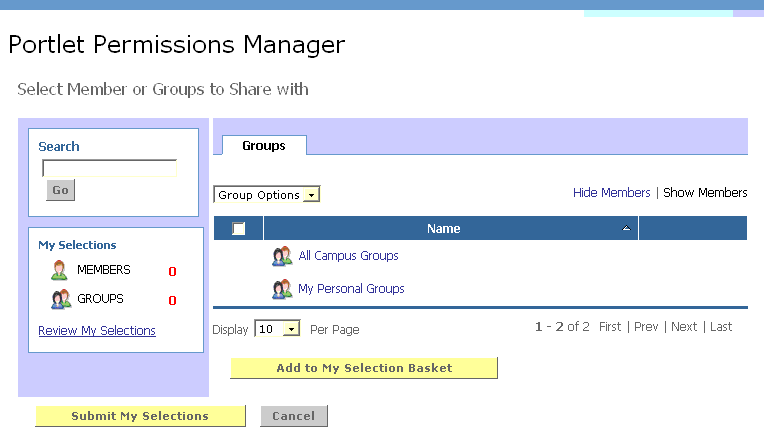
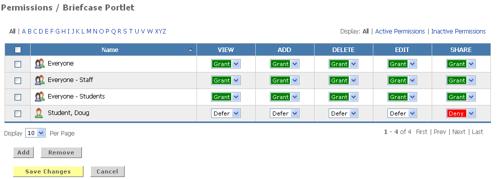

Permissions Portlet
Looking for more help options? Click Here
The management of administrative privileges for Academus Portlets are handled via the Portlet Permission Manager. This tool enables administrators to grant and deny permissions to specific portal groups and individuals. Portlets with permissions managed by this tools include the Blogging Portlet, the Notification Portlet and the Briefcase

To establish permissions for a portlet
1. Navigate to the Portlet Permission Manager Channel.
2. Click the link for the portlet whose permissions will be created or updated.
3. Click the Add button to select the users and groups to whom permissions will be granted.
You may select members and groups in one of two ways: you may search for specific members or groups, or browse through the directory of Campus Groups or your own Personal Groups.

To search for a specific member or group:
4. Enter a whole or partial member or group name of the in the Search field.
5. Click the Go button.
6. From the list of search results, place a checkmark next to each member/group that you wish to add.
7. Click the Add to My Selection Basket button.
To browse through the listings of Campus Groups or your Personal Groups:
8. Click the Groups tab within the permission portlet
9. Choose Campus or Personal Groups.
10. Find the group you wish to add.
11. Place a checkmark next to the group name.
12. Click the Add to My Selection Basket button.
13. When all desired groups and members have been selected, click the Submit My Selections button.
14. For each group or individual displayed in the permissions view, select the appropriate permission.
a. Grant - Enables the group/user to perform the function
b. Deny – Prohibits the group/user from performing the function
c. Defer – Causes the group/users privileges to be inherited from those set for a parent group of which they are a member. If no privileges have been set for a parent group, defer will be treated as a permission of Deny.

15. When all permissions have been assigned, click Save Changes.
Permission OptionsThe privileges controlled by the portal permission manager vary by portlet.
Each instance of the Blogging Portlet has four administrative privileges:
- Edit Blog Properties - Users with this privilege have the ability to set blog properties such as name, description, blog owners, business rules for emailing comments, etc.
- Edit Blog Categories – Users with this privilege have the ability to create, edit and delete blog categories and sub-categories
- Edit Blog Entries - Users with this privilege have ability to post entries to the blog to be viewed by all blog subscribers
- Upload Files – Users with this privilege have the ability to upload files to the blog which maybe be included in Blog Entries
The Briefcase Portlet has five administrative privileges:
- View - Users with this privilege have the ability to view files and folders accessible via the briefcase
- Add - Users with this privilege have the ability to add files and folders to the directories accessible via the briefcase
- Delete Files - Users with this privilege have the ability to delete files and folders in the directories accessible via the briefcase
- Edit Files - Users with this privilege have the ability to edit files and folders in the directories accessible via the briefcase
- Share Folders – User with this privilege have the ability to share briefcase folders with other users.
The Notification Portlet has eight user permissions:
- Attach - Users with this privilege have the ability to attach files when composing an notification
- Delete – Users with this privilege have the ability to delete messages to which they have access. For most users this will mean messages in their personal inboxes and save folders. For users also granted View All privileges, they will be enabled to delete any notification in the system
- Compose - Users with this privilege have the ability to compose and send notifications.
- Save – Users with this privilege have the ability to Save notifications from their inboxes to a Save folder.
- Import – Users with this privilege have the ability to import a file of notifications and distribute their notifications.
- Export – Users with this privilege have the ability to export notifications, including the detailed report information on the read/unread status for each message recipient.
- Detail Report – Users with this privilege have the ability view a report for notifications they have send which detailed the read/unread status for each recipient.
- View All – User with this privilege have the ability to view all messages in the system. Combined with other privileges these users can view, delete, and/or export any notification.